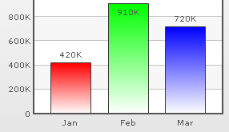
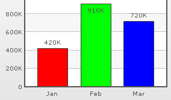
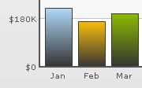
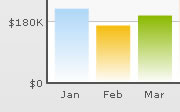
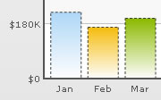
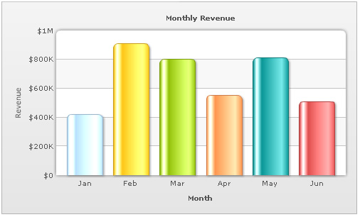
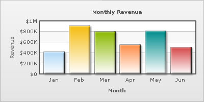

XML Attributes for Data Plot |
||||||||||||
| Plot refers to the column, lines etc. in a column, line chart respectively. | ||||||||||||
| Specifying custom colors for individual data plots | ||||||||||||
| In all the charts, you can specify custom color for each data plot. This is done using the color attribute of <set /> element as under. The color has to be in hex code format (RRGGBB) without #. | ||||||||||||
<chart ....> |
||||||||||||
|  | ||||||||||||
| Removing the gradient color | ||||||||||||
| By default, most charts in FusionCharts suite have FFFFFF as the plot gradient color. In case you wish to use solid fills for the column (or area), you have to use the plotGradientColor attribute without any color defined for it, i.e. plotGradientColor='' | ||||||||||||
<chart plotGradientColor='' ....> |
||||||||||||
|  | ||||||||||||
| Applying common gradient | ||||||||||||
| Using the plotGradientColor attribute, you can globally add a gradient color to the entire plot (column, area) of chart by specifying a color as its attribute. For example, if you want to set #333333 as the common gradient color for all the columns in a 2D column chart, your data would be as under: | ||||||||||||
<chart plotGradientColor='333333' ....> |
||||||||||||
|  | ||||||||||||
| Controlling gradient properties | ||||||||||||
| The plot gradient properties can be controlled using the following attributes: | ||||||||||||
|
||||||||||||
| <chart plotGradientColor='333333' plotFillRatio='80,20' plotFillAlpha='95,100' plotFillAngle='45'> | ||||||||||||
| Note that we have specified 2 values for plotFillRatio and plotFillAlpha. This is because one of the values specified is taken by the color specified for the column (or taken by default from the color palette) and the other one by the common gradient color specified using plotGradientColor attribute. | ||||||||||||
| Plot border | ||||||||||||
| By default, each data plot (column, area, pie etc) shows a border around it. You can hide the same using showPlotBorder='0'. | ||||||||||||
|  | ||||||||||||
<chart showPlotBorder='0' ....> |
||||||||||||
| Dashed Plot border | ||||||||||||
| You can make the plot border dashed using plotBorderDashed='1'. The dash length & gap can be customized using the plotBorderDashLen and plotBorderDashGap attributes respectively. | ||||||||||||
| <chart plotBorderDashed='1' plotBorderDashLen='2' plotBorderDashGap='2' ...> | ||||||||||||
| The above XML would yield the following chart: | ||||||||||||
|  | ||||||||||||
| Using rounded border and glass fill effect for 2D Columns / 2D Bars | ||||||||||||
| In charts that support 2D Columns or Bars (like column charts, bar charts, 2D combination charts etc.), you can opt to plot columns/bars with rounded edges and glass effect gradients. To do so, you need to add useRoundEdges='1' attribute to <chart> element as under: | ||||||||||||
| <chart caption='Monthly Revenue' xAxisName='Month' yAxisName='Revenue' numberPrefix='$' showValues='0' useRoundEdges='1'> <set label='Jan' value='420000' /> <set label='Feb' value='910000' /> <set label='Mar' value='800000' /> <set label='Apr' value='550000' /> <set label='May' value='810000' /> <set label='Jun' value='510000' /> </chart> |
||||||||||||
| This will yield the following results: | ||||||||||||
|  | ||||||||||||
As you can see in the above image, the columns have been rounded and filled with a glass effect gradient. Apart from that, the canvas has also been modified to render the top part as rounded shape. However, in this mode, the following features wouldn't work:
|
||||||||||||
| Using Styles to provide effects to data plot | ||||||||||||
| Using Styles, you can apply effects like shadow, glow, bevel and blur to the data plot. In the XML given below, we have given a bevel and shadow effect to the columns in a column chart. | ||||||||||||
|  | ||||||||||||
| The XML going into the same is: | ||||||||||||
| <chart caption='Monthly Revenue' xAxisName='Month' yAxisName='Revenue' numberPrefix='$' showValues='0'> <set label='Jan' value='420000' /> <set label='Feb' value='910000' /> <set label='Mar' value='800000' /> <set label='Apr' value='550000' /> <set label='May' value='810000' /> <set label='Jun' value='510000' /> <styles> <definition> <style name='myBevel' type='bevel' distance='3'/> <style name='myShadow' type='shadow' angle='45' distance='3'/> </definition> <application> <apply toObject='DATAPLOT' styles='myBevel, myShadow' /> </application> </styles> </chart> |
||||||||||||
| Applying animation using STYLES | ||||||||||||
| You can customize animation of the data plot using STYLES. Given below is an XML which renders fade-in effect for columns, lines etc. | ||||||||||||
| <chart caption='Monthly Revenue' xAxisName='Month' yAxisName='Revenue' numberPrefix='$' showValues='0'> <set label='Jan' value='420000' /> <set label='Feb' value='910000' /> <set label='Mar' value='800000' /> <set label='Apr' value='550000' /> <set label='May' value='810000' /> <set label='Jun' value='510000' /> <styles> <definition> <style name='myAnim' type='animation' param='_alpha' start='0' duration='2'/> <application> <apply toObject='DATAPLOT' styles='myAnim' /> </application> </styles> </chart> |